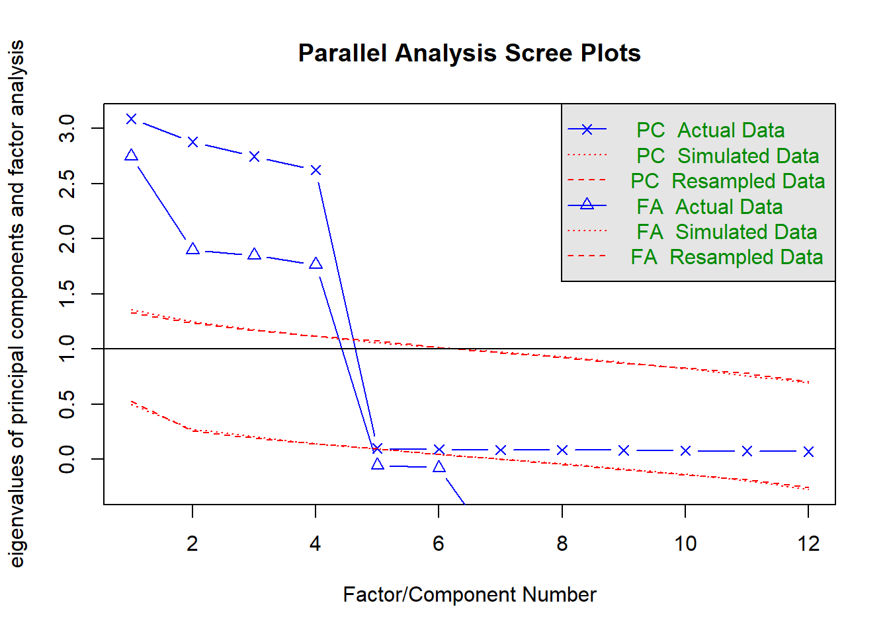
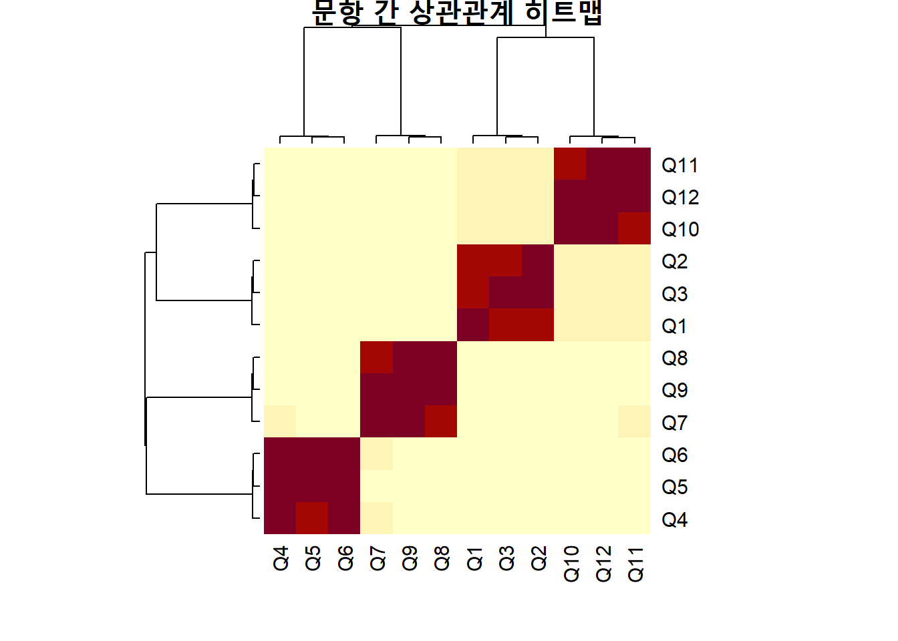
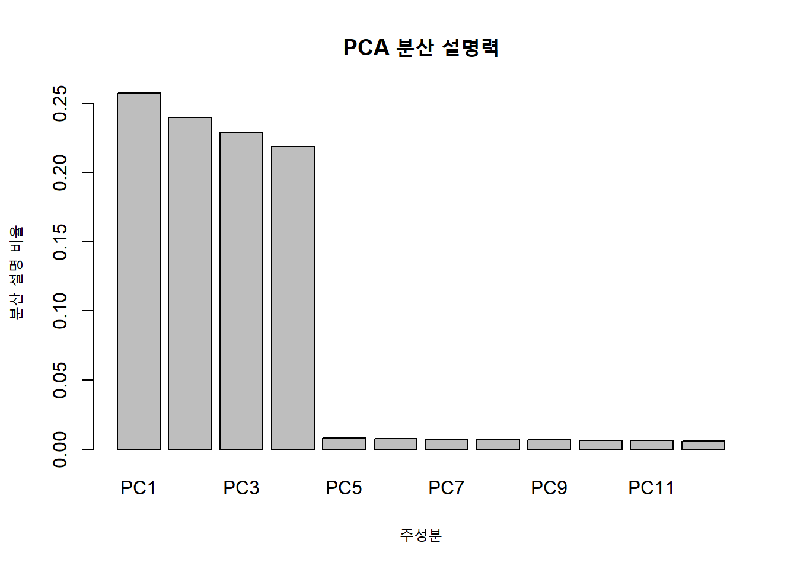
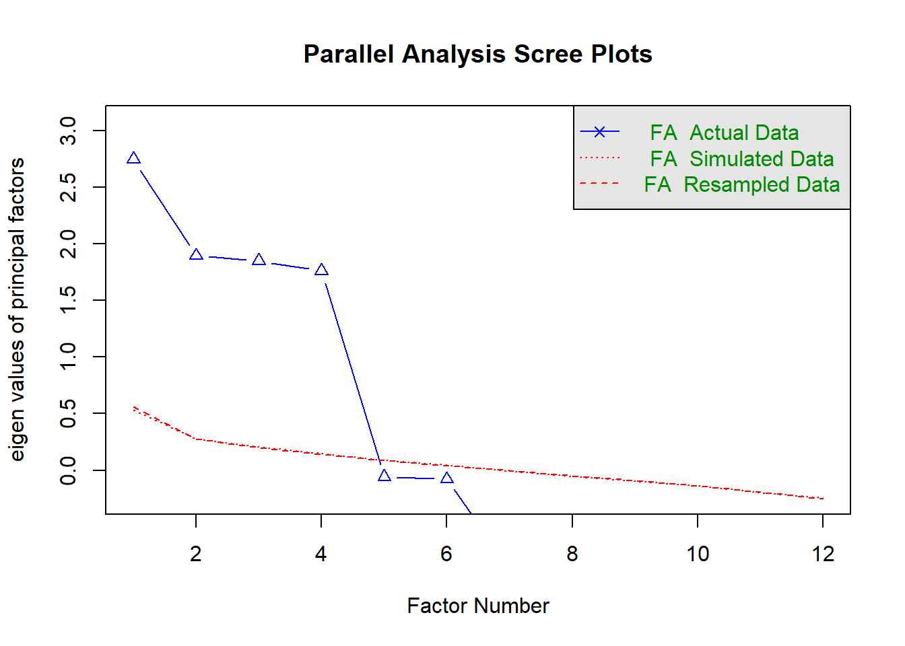

통계 혹은 데이터 분석에서 갑자기 차원축소라니 무슨 뜻일까? 보통 차원(dimension)이란 단어는 물리학에서 자주 등장한다. 통계에서 차원은 다소 낯설긴 하지만 수리적인 접근에서 보자면 통계도 수리적인 차원의 계산을 기본으로 하다보니 차원이라는 개념이 등장한다.
통계 혹은 데이터 분석에서 차원이란 데이터에서 변수 한 개를 의미한다. 그렇다면, 왜 차원을 축소한다는 걸까?
데이터를 분석할 때 가장 먼저 부딪히는 현실적인 문제 중 하나는 변수가 너무 많다는 점이다. 설문조사나 매장 평가표, 고객 피드백 데이터 등 외식산업 현장에서 수집되는 데이터는 수십 개의 항목으로 구성되곤 한다. 처음에는 가능한 많은 정보를 확보하는 것이 중요해 보일 수 있지만, 실제 분석에 들어가면 이 많은 변수들이 분석을 복잡하게 만들고 해석을 어렵게 만든다.
변수가 많다는 것은 데이터 자체가 고차원 데이터라는 의미이다.
이 장에서는 이러한 고차원 데이터의 문제점을 소개하고, 이를 해결하기 위한 방법 중 하나인 차원축소(Dimension Reduction)의 개념을 탐구한다. 특히, 외식경영 실무에서 자주 접할 수 있는 예제를 중심으로 차원축소의 필요성과 가능성을 이해해 보자.
8.0.2 외식 데이터의 차원이란 무엇인가?
차원은 곧 변수의 개수를 의미한다. 예를 들어 고객만족도 조사를 통해 다음과 같은 문항을 수집했다고 가정하자. 한 매장에 대해 아래와 같은 항목으로 만족도를 평가했다고 하자.
문항코드
문항 내용
Q1
음식의 맛에 만족하는가
Q2
음식의 양은 적절했는가
Q3
메뉴의 다양성은 충분했는가
Q4
직원의 응대는 친절했는가
Q5
음식 제공 속도는 적절했는가
Q6
매장 내 청결 상태는 만족스러운가
Q7
내부 인테리어는 쾌적했는가
Q8
좌석 배치가 편안했는가
Q9
가격대가 합리적인가
Q10
전반적인 만족도를 어떻게 평가하는가
이런 문항이 총 20개에 이른다고 가정하면, 각 고객이 20차원의 점으로 표현되는 셈이다. 즉, 고객 1명은 20개의 평가 점수를 가진다. 이런 식의 데이터가 300명에 대해 수집되었다면 300개의 20차원 점이 모이게 된다.
이제 문제는, 이 20개의 변수 중에서 모두가 정말로 독립적인 정보일까?라는 것이다.
8.0.3 너무 많은 변수, 왜 문제인가?
변수가 많으면 다음과 같은 문제점이 생긴다.
첫째, 해석이 어렵다. 어떤 고객이 전반적인 만족도가 낮다고 했을 때, 그 원인이 맛 때문인지, 가격 때문인지, 청결 때문인지 판단하기가 쉽지 않다.
둘째, 변수들 사이에 중복된 정보가 존재할 수 있다. 예를 들어 ’음식의 맛’과 ’음식의 양’에 대한 만족도는 유사한 경향을 보일 수 있다.
셋째, 모델이 과적합(overfitting)될 가능성이 높아진다. 변수의 수가 관측값 수에 비해 많아질수록 통계모델은 데이터를 과도하게 설명하려고 하게 된다.
이런 이유로, 차원축소는 선택이 아니라 필수가 된다.
8.0.4 차원을 줄이면 무엇이 좋아지나?
차원을 줄인다는 것은 곧, 여러 변수들을 하나의 대표 변수로 축약해 새로운 ’요약 지표’를 만드는 것이다. 예를 들어 음식의 맛, 양, 메뉴 다양성 등의 항목들을 하나의 ’음식 품질’이라는 대표 변수로 요약할 수 있다면, 분석은 훨씬 단순하고 해석 가능해진다.
이를 통해 얻는 이점은 다음과 같다. -핵심 요인의 식별: 고객 만족도에 영향을 주는 진짜 요인을 찾을 수 있다. -효율적인 데이터 시각화: 2차원, 3차원 공간에 데이터를 그릴 수 있게 된다. -모델 단순화: 불필요한 변수 제거로 예측 모델의 안정성과 해석력이 향상된다.
8.0.5 실습 예제: 30개 매장, 20개 만족도 항목
외식업체가 전국의 30개 매장에서 고객만족도 데이터를 수집했다고 가정하자. 각 매장은 20개의 평가항목(Q1~Q20)에 대해 고객들로부터 평균 점수를 산출했다. 데이터는 다음과 같이 구성된다.
# 데이터 불러오기data <-read.csv("data/ch7_data1.csv")summary(data)
Q1 Q2 Q3 Q4
Min. :-3.30397 Min. :-3.218637 Min. :-3.12413 Min. :-3.11765
1st Qu.:-0.75179 1st Qu.:-0.666921 1st Qu.:-0.69852 1st Qu.:-0.70591
Median : 0.02054 Median :-0.004300 Median : 0.03173 Median :-0.02347
Mean : 0.02197 Mean : 0.007298 Mean :-0.01296 Mean :-0.02486
3rd Qu.: 0.69615 3rd Qu.: 0.754074 3rd Qu.: 0.70221 3rd Qu.: 0.67781
Max. : 3.77748 Max. : 3.560373 Max. : 4.13400 Max. : 3.27877
Q5 Q6 Q7 Q8
Min. :-2.799923 Min. :-2.48486 Min. :-2.58339 Min. :-2.78220
1st Qu.:-0.647184 1st Qu.:-0.70156 1st Qu.:-0.62782 1st Qu.:-0.64996
Median :-0.068238 Median :-0.01616 Median : 0.02933 Median : 0.09586
Mean :-0.006197 Mean :-0.01642 Mean : 0.06577 Mean : 0.09838
3rd Qu.: 0.573723 3rd Qu.: 0.64196 3rd Qu.: 0.73468 3rd Qu.: 0.81816
Max. : 3.163072 Max. : 3.16654 Max. : 3.09384 Max. : 3.24827
Q9 Q10 Q11 Q12
Min. :-2.693614 Min. :-3.12991 Min. :-3.09593 Min. :-3.32982
1st Qu.:-0.694263 1st Qu.:-0.58637 1st Qu.:-0.58794 1st Qu.:-0.66113
Median :-0.002617 Median : 0.11276 Median : 0.09388 Median : 0.12295
Mean : 0.057173 Mean : 0.08894 Mean : 0.06734 Mean : 0.09147
3rd Qu.: 0.741851 3rd Qu.: 0.82727 3rd Qu.: 0.81690 3rd Qu.: 0.83016
Max. : 2.653609 Max. : 2.67790 Max. : 2.84575 Max. : 3.11993
위 코드는 Q1~Q20까지 20개의 항목을 가진 고객 데이터 300명을 무작위로 생성한 예시다. 실제로는 고객설문 또는 POS 데이터에서 수집한 정보가 될 수 있다.
이 데이터를 보면 표면적으로는 20개의 서로 다른 항목으로 구성되어 있지만, 실제로는 몇몇 항목들이 유사한 정보를 담고 있다는 점을 쉽게 확인할 수 있다. 이처럼 상관관계가 높은 변수들이 존재할 경우, 주성분 분석(PCA: Principal Component Analysis)을 통해 이들을 하나의 축으로 묶을 수 있다.
8.0.6 실제 외식 경영 현장에서의 차원축소 활용
차원축소 기법은 외식업 실무에서 다음과 같이 활용할 수 있다.
1. 메뉴 선호도 조사: 고객이 평가한 다양한 메뉴 항목(맛, 건강함, 양, 가격 등)을 축소해 핵심 선호 패턴 도출 2. 브랜드 이미지 조사: 30개 이상의 이미지 속성 평가 항목에서 2~3개의 요인(고급/대중, 전통/현대 등)만 추출 3. 직원 서비스 품질 분석: 응대태도, 전문성, 청결, 복장 등 다양한 항목을 단순화해 핵심 서비스 요인 도출 4. 소셜미디어 텍스트 분석: 다양한 키워드 빈도를 요약해 핵심 소비 트렌드를 파악
8.0.7 다음으로 넘어가기 전 확인할 질문
- 이 데이터에서 정말 20개의 항목이 모두 필요한가? - 고객만족도 항목을 축소한다면 어떤 기준으로 묶을 수 있을까? - 변수 간의 상관관계를 시각화하면 어떤 구조가 보일까?
이러한 질문들을 해결하기 위한 가장 대표적인 방법이 바로 주성분분석(PCA)이다. 다음 절에서는 PCA와 유사한 다른 방법들, 그리고 PCA 자체의 작동 원리에 대해 살펴본다.
8.0.8 주성분분석과 요인분석의 차이
데이터를 분석하다 보면 비슷한 기법들이 존재하는 경우가 많다. 특히 차원축소와 관련된 분석에서는 주성분분석(PCA)과 요인분석(FA)을 혼동하기 쉽다. 두 방법은 모두 많은 변수를 적은 수의 지표로 축약한다는 점에서 유사하지만, 그 분석 목적과 수학적 전제는 완전히 다르다.
이 장에서는 PCA와 FA의 구조적 차이를 외식산업 사례와 함께 살펴보고, 어떤 상황에서 어떤 분석이 적절한지를 이해할 수 있도록 한다.
8.0.9 분석 목적의 차이: 축소 vs 탐색
기본적으로 차원축소에는 대표적인 두 가지 방법이 있다. 하나가 주성분 분석 (PCA: Principal Component Analysis)이고, 다른 하나가 요인 분석 (Factor Analysis)이다. 이공계열에서는 이 두 분석 방법을 수리적으로 접근하고 증명하는 과정을 초반에 거치기 때문에 두 분석의 차이점을 분명하게 이해하는 것이 일반적인다. 문제는 사화과학자들의 경우 이러한 수리적 접근보다는 통계 프로그램을 이용한 분석과 해석에 초점을 맞추기 때문에 이 둘의 차이를 거의 이해하지 못하고, 오히려 이 둘을 같은 방법이라고 생각하는 경우가 많다.
이러한 오해를 줄이기 위해 기본적으로 이 두 방법의 차이를 이해할 필요가 있다.
PCA는 단어 그대로 ’주요 성분(principal component)’을 찾는 데 집중한다. 관측된 변수들 간의 분산을 최대한 유지하면서, 서로 상관관계가 높은 변수들을 새로운 축으로 재구성하는 것이 목적이다. 즉, PCA는 정보 손실을 최소화하면서 차원을 축소하는 데 초점을 둔다.
반면 요인 분석(FA: Factor Analysis)는 변수들 사이의 공통된 원인을 추정하려는 데 목적이 있다. 즉, 관측된 변수들 이면에 존재한다고 가정되는 잠재요인(latent factor)을 찾아내는 것이 핵심이다. 요인 분석은 변수의 분산을 공통분산(common variance)과 고유분산(unique variance)으로 나누어 설명한다.
이 차이는 다음 표처럼 정리할 수 있다.
구분
주성분분석 (PCA)
요인분석 (FA)
분석 목적
정보 축소
잠재요인 탐색
분산 구성
Total variance
Common + Unique variance
고유분산 가정
없음
존재함
주성분 수 결정
분산 설명 비율 기준
이론적 요인 수 또는 Scree plot 기준
해석 기준
축의 분산
요인의 해석력 (loading)
가장 큰 차이는 요인 분석의 경우 설명이 되는 공통 분산 (Common Variance)를 요인으로 가지고 가지만 설명이 되지 않는 고유 분산(Unique Variance)는 버린다는 점이다. 반면, 주성분 분석은 버리는 분산 없이 모두를 가지고 가는 경향이 있다. 결국 차원축소의 두 방법론의 핵심은 분산이다. 여전히 분산이 통계의 중심이고 통계는 분산의 마법인 셈이다.
8.0.10 외식산업에서의 예시 비교
A 프랜차이즈는 전국 100개 매장의 서비스 품질을 평가하기 위해 다음과 같은 12개 항목의 고객설문을 수집하였다. 이 변수들은 크게 네 가지 영역(서비스 품질, 음식 품질, 매장 환경, 가격과 구성)으로 나눠볼 수 있다고 예상된다.
코드
문항 내용
Q1
직원이 친절하게 응대했다
Q2
주문 처리가 신속했다
Q3
직원이 메뉴에 대해 잘 알고 있었다
Q4
음식의 맛이 좋았다
Q5
음식의 양이 적절했다
Q6
음식이 신선하게 느껴졌다
Q7
매장이 청결했다
Q8
조명이 쾌적했다
Q9
좌석이 편안했다
Q10
가격이 합리적이었다
Q11
메뉴 구성이 다양했다
Q12
전반적인 만족도를 평가하자면?
이 데이터를 요약하려는 목적이 단지 변수 수를 줄이는 것이라면 주성분분석을 사용하고, 각 항목들이 어떤 잠재요인으로부터 영향을 받고 있는지를 추정하고자 한다면 요인분석 사용해야 한다.
8.0.11 분석 결과가 다르게 나오는 이유
주성분분석은 고유분산을 고려하지 않고, 변수들 전체의 분산을 설명하는 성분을 찾는다. 따라서 노이즈나 측정오차까지도 포함하여 설명하려는 경향이 있다. 반면 요인분석은 관측된 변수들이 공통된 구조를 기반으로 움직인다고 가정하고, 측정오차를 분리하려 한다.
예를 들어 고객이 ’직원이 친절했는가’에 대해 낮은 점수를 줬다면, 그 이유가 단순히 그 날의 우연한 경험인지 아니면 점포 전반의 서비스 품질 문제인지 파악할 수 있어야 한다. 주성분분석은 이 두 가능성을 구분하지 않지만, 요인분석은 공통요인에 기인한 응답 패턴만을 모델링한다.
8.0.12 R 실습: 동일한 데이터로 PCA vs FA 비교
앞서 생성한 데이터(data)를 활용하여 두 분석을 실행해 보자.
library(psych)data <-as.data.frame(data)# 요인 수 추정: FA 및 PCA 병행fa.parallel(data, fa ="both")

Parallel analysis suggests that the number of factors = 4 and the number of components = 4
위의 fa.parallel() 함수는 Scree plot과 병렬분석을 함께 출력하며, 주성분분석과 요인분석에서 적절한 요인 수를 제안한다. 이후 요인분석을 4요인으로 실행한다.
예를 들어 어떤 고객이 음식의 맛(Q4)에 높은 점수를 준 경우, 음식의 양(Q5)에도 높은 점수를 줄 가능성이 높다면 두 변수는 양의 공분산을 갖는다.
8.1.2 공분산 행렬이란 무엇인가
변수가 2개 이상일 경우, 모든 변수 쌍에 대해 공분산을 계산할 수 있다. 이를 표로 정리한 것이 공분산 행렬(covariance matrix)이다. 공분산 행렬의 대각 원소는 각 변수의 분산이며, 비대각 원소는 두 변수 간의 공분산을 나타낸다.
예를 들어 Q4~Q6까지 음식 품질 관련 3개 변수에 대한 공분산 행렬은 다음과 같은 구조를 가진다.
Q4
Q5
Q6
Q4
Var(Q4)
Cov(Q4,Q5)
Cov(Q4,Q6)
Q5
Cov(Q5,Q4)
Var(Q5)
Cov(Q5,Q6)
Q6
Cov(Q6,Q4)
Cov(Q6,Q5)
Var(Q6)
PCA는 바로 이 공분산 행렬의 고유값 분해(eigen decomposition)를 통해 주성분을 찾는다.
8.1.3 상관관계는 왜 필요한가
공분산은 단점이 있다. 값의 단위(scale)에 따라 크기가 달라진다는 점이다. 예를 들어 음식의 맛(Q4)은 5점 척도, 음식 양(Q5)은 10점 척도로 평가했다면 공분산 값은 두 척도에 영향을 받는다.
이 문제를 해결하기 위해 사용하는 것이 상관계수(correlation coefficient)이다. 상관계수는 공분산을 각 변수의 표준편차로 나눈 값으로, 공분산을 표준화(Standardization)한 것이 바로 상관계수이다. 상관계수는 두 변수 간의 상대적인 관계의 강도를 -1부터 1 사이의 값으로 표준화해 보여준다.
상관계수가 0.8 이상이면 매우 강한 양의 상관관계, -0.8 이하면 매우 강한 음의 상관관계로 해석한다. PCA를 할 때, 변수의 단위가 다르거나 변수 간 분산의 차이가 클 경우 상관행렬 기반 PCA(correlation-based PCA)를 사용하는 것이 더 바람직하다.
8.1.4 외식산업 실무 예제: 고객만족도 항목의 상관구조
다음은 한 외식브랜드가 수집한 고객만족도 데이터의 일부이다. Q1~Q12까지는 다양한 서비스 항목에 대한 고객 평가 점수이며, 앞서 생성한 데이터를 활용한다.
이제 각 변수들 간의 상관행렬을 구하고 이를 시각화해 보자.
# 필요한 패키지 로드library(psych)library(ggplot2)# 데이터 로드data <-read.csv("data/ch7_data1.csv")# 상관행렬 계산cor_matrix <-cor(data)# 히트맵 시각화heatmap(cor_matrix, main="문항 간 상관관계 히트맵")

이 히트맵을 통해 어떤 문항들이 서로 밀접하게 연관되어 있는지를 한눈에 파악할 수 있다. 예를 들어 Q1~Q3은 모두 직원 서비스에 관련된 문항이므로 서로 높은 상관관계를 가질 것으로 예상된다. 반면, Q1과 Q11은 서로 관련성이 적은 항목이기 때문에 낮은 상관계수를 가질 가능성이 높다.
8.1.5 상관관계 해석의 함정
상관계수는 두 변수 간의 선형 관계를 측정하지만, 인과관계를 보장하지 않는다. 예를 들어 음식의 맛(Q4)과 직원의 친절함(Q1)이 양의 상관관계를 보인다고 해도, 직원이 친절해서 음식이 맛있다고 단정할 수는 없다. 이는 단지 두 평가가 비슷한 방향으로 움직인다는 통계적 결과일 뿐이다.
또한 상관계수는 편상관(partial correlation)이 아니라는 점에서 제3의 변수에 영향을 받을 수 있다. 예를 들어 가격 만족도(Q10)와 음식 만족도(Q5)가 높은 상관을 보이는 이유는 실제로는 Q12(전체 만족도)가 영향을 미친 결과일 수도 있다.
8.1.6 왜 PCA 전에 상관행렬을 확인해야 하는가
PCA는 변수들 간에 일정 수준 이상의 상관성이 존재할 때 효과적으로 작동한다. 변수 간에 아무런 상관관계도 없다면, 차원축소는 무의미하다. 따라서 PCA를 하기 전에는 반드시 상관행렬을 살펴보아야 하며, 그 구조를 통해 어떤 변수들이 함께 묶일 가능성이 있는지를 파악하는 것이 중요하다.
다음 절에서는 이 상관구조로부터 어떻게 고유값과 고유벡터를 도출하여 주성분을 계산하는지를 알아본다.
8.2 PCA의 수학적 원리
주성분분석(PCA)은 직관적으로는 변수가 많은 데이터를 적은 수의 요약된 축으로 표현하는 분석 방법이다. 하지만 그 이면에는 선형대수학이라는 수학적 구조가 존재한다. 특히 고유값(eigenvalue)과 고유벡터(eigenvector)라는 개념이 핵심을 이룬다. 이 절에서는 PCA가 어떻게 수학적으로 작동하는지를 시각적으로 이해할 수 있도록 설명하고, 실제 외식산업 데이터를 통해 확인해본다.
8.2.1 왜 고유값과 고유벡터가 중요한가
PCA는 각 변수들 간의 상관성을 분석하여 가장 정보가 많은 방향(축)을 찾아낸다. 이 축은 단순한 평균이 아니라, 변수 간의 공분산을 반영한 최적의 방향이다. 이 방향을 찾는 수학적 도구가 바로 고유벡터이며, 이 축이 담고 있는 정보의 양을 나타내는 값이 고유값이다.
공분산 행렬을 행렬 A라고 하면, PCA는 다음 식을 푸는 것이다.
\[
A \cdot x = \lambda \cdot x
\]
여기서 \(x\)는 고유벡터(eigenvector), \(\lambda\)는 고유값(eigen value)을 의미한다. 이 식은 “어떤 벡터 \(x\)에 공분산 행렬을 곱했을 때 그 벡터의 방향은 유지되고 크기만 \(\lambda\)배가 되는” 경우를 찾는 것이다.
이러한 고유벡터들이 바로 주성분(Principal Components)이며, 고유값은 그 주성분이 설명하는 데이터의 분산(정보량)을 의미한다. 따라서 고유값이 큰 순서대로 몇 개의 고유벡터만 남기고 나머지를 버리면 차원축소가 가능해진다. 결론적으로 고유값이 작은 고유벡터는 버리게 되는데 이는 어느 정도의 분산의 손실을 의미한다. 하지만 이 정도의 손실은 요인분석에 비하면 크지 않은 경우가 많다.
간단한 예제를 통해 주성분 분석을 계산해 보자. 다음과 같은 분산\(\cdot\)공분산 매트릭스가 있다고 가정해보자.
그렇다면, 이게 무슨 뜻일까? 기본적으로 우리가 가지고 시작한 공분산 매트릭스의 고유값 (\(\lambda\))가 1과 3인데, 이 공분산 행렬을 선형변환 했을 때, 방향은 바뀌지 않지만 크기만 변하는 벡터가 2개 있는데, 이 두 벡터는 그 크기가 1배와 3배가 된다는 의미로 해석된다. 이게 무슨 소리인가?
이렇게 되는데, 이걸 설명해 보자면, 매트릭스 \(x\)를 우리가 가진 공분산 매트릭스로 선형변환을 하면 위와 같이 나온다는 것이다. 즉, 2차원 평면상에서 원점으로부터 (1, 1)로 가는 벡터가 선형변환 이후 원점으로부터 (3, 3)의 벡터로 변환되는 것이다. 이는 방향은 변하지 않고 크기 즉, 여기서는 길이가 3배가 되는 것이다.
이 값이 \(\lambda\)값(= 3)이 가장 큰 고유값으로부터 구해진 벡터이므로 첫번째 주성분 (Principal Component)가 되는데, 이 고유값이 의미하는 바는 분산이다. 즉 두 변수의 분산은 각각 2였으므로 두 변수의 전체 분산은 \(2 + 2 = 4\)가 된다. 따라서 우리가 가진 공분산 매트릭스의 데이터에서 3/4이 바로 이 첫 번째 주성분에 의해 설명되는 것이다. 이 첫 번째 주성분은 결국 75%의 분산을 설명하는 매우 중요한 주성분이다.
두 번째, \(\lambda\)는 1이었고, 여기서 구해진 고유벡터를 다시 원래의 공분산 매트릭스와 계산해 보면,
위에서 보듯이 두번째 고유값은 1이었으며 이는 전체 분산의 1/4이었고 두번째 고유벡터는 원점으로부터 (1, -1)로 가는 벡터가 된다. 이 벡터는 두 번째 벡터로서 전체분산의 25%를 설명하고 있고, 첫 번째 벡터와는 직각(90도)을 이룬다. 주성분분석은 계산상 자동적으로 주성분간에 상호 직각을 이루도록 설계되어져 있다. 물론 보다 새로운 혹은 어려운 알고리즘을 사용한다면 다소 차이가 있을 수 있으나 기본적인 전제는 직각이 된다.
종합적으로 보자면, 주성분분석이란 공분산 매트릭스로부터 전체 분산과 공분산의 정보를 이용하여 데이터의 분산을 가장 잘 설명할 수 있는 고유벡터와 고유값을 구하여 순서대로 고유벡터와 고유값을 구한다.
8.2.2 외식 데이터 예제: 12개 문항, 300명 응답
앞서 생성한 외식업 관련 고객만족도 데이터는 12개의 문항으로 구성되어 있으며, 다음과 같은 구조를 가진다.
문항
항목 내용
Q1~Q3
직원 서비스 평가
Q4~Q6
음식 품질 평가
Q7~Q9
매장 환경 평가
Q10~Q12
가격/구성 평가
각 응답은 1~5점 척도로 측정되며, 총 300명의 응답이 수집되었다. 이제 이 데이터를 통해 PCA를 실행하고 고유값과 고유벡터가 어떻게 도출되는지를 살펴보자.
8.2.3 PCA 실행 및 결과 해석
R의 prcomp() 함수는 공분산 또는 상관행렬을 기반으로 PCA를 수행한다. 이 예제에서는 scale=TRUE를 지정해 변수의 단위 차이를 없애고 상관행렬 기반 PCA를 수행한다.
각 주성분(PC)의 표준편차. 고유값의 제곱근이며, 주성분이 담고 있는 분산의 크기와 관련됨
Proportion of Variance
해당 주성분이 설명하는 전체 분산의 비율
Cumulative Proportion
PC1부터 해당 PC까지 누적하여 설명하는 전체 분산의 비율
PC1 ~ PC4
- PC1의 표준편차는 1.7577이고, 전체 분산의 25.75%를 설명한다. - PC2는 24.00%, PC3는 22.89%, PC4는 21.88%의 분산을 각각 설명한다. - 따라서 PC1~PC4까지 네 개의 주성분만으로 전체 데이터의 **94.52%*를 설명할 수 있다.
이 결과는 매우 이상적이다. 보통 누적설명력이 70~80% 이상이면 우수한 모델로 평가하는데, 여기서는 4개 주성분으로 거의 전체 정보를 설명하고 있다.
PC5 ~ PC12
- PC5 이후의 주성분들은 각각 1% 미만의 분산만을 설명하며, 대부분 고유값이 1보다 작을 것으로 추정된다. - 이들은 정보량이 적고 노이즈 수준일 가능성이 높기 때문에 제거해도 된다.
이 데이터는 12개의 고객만족 항목으로 구성되어 있지만, 실제로는 4개의 축만으로 전체 고객 인식의 구조를 거의 완벽하게 설명할 수 있다는 의미다.
이 4개의 주성분은 예컨대 다음과 같이 명명될 수 있다:
- PC1: 직원 응대와 서비스 전반 (예: Q1~Q3) - PC2: 음식 품질 (Q4~Q6) - PC3: 매장 분위기 (Q7~Q9) - PC4: 가격/구성 만족도 (Q10~Q12)
이 경우 전체 설문 문항 수를 12개에서 4개 수준으로 축약하거나, 요약지표로 사용하여 전략적 고객 세분화나 매장 간 비교에 활용할 수 있다.
그러므로, PC1 ~ PC4만 남기고 PC5 ~ PC12는 제거해도 무방하다. 고유값 기준 (1 이상)을 만족하는 주성분만 사용하는 것이 바람직하다. 고객설문 축소, 만족도 요인 분석, 핵심지표 설계 등에 매우 유용한 결과이다
그렇다면, 왜 고유값 기준 1이상의 값만을 주성분으로 사용/유지 하는 것이 좋은가? 위에서 직접 계산한 예제는 공분산 매트릭스를 사용해서 계산했다. 하지만 실제로는 분산/공분산을 표준화한 상관계수를 사용하는 것이 일반적이다. 위에서 설명했듯이, 분산 및 공분산은 변수의 단위에 매우 민감하다. 따라서 변수를 표준화하여 사용하면 이러한 문제를 해결할 수 있다. 변수를 표준화하여 공분산 매트릭스를 만들면 그게 바로 상관계수 매트릭스다. 혹은 상관계수를 직접 구하는 것이 바로 표준화이기도 하다. 따라서, 표준화를 먼저하느냐 나중에 하느냐의 차이일 뿐 동일하다.
중요한 것은 표준화를 할 경우 각 변수의 수준에서 보면, 표준화란 모든 변수의 값을 해당 변수의 평균값을 빼고 다시 표준편차로 나누어 주는 것이 표준화다. 계산식은 앞쪽의 z-value를 구하는 식과 동일하다. 이렇게하면, 모든 변수가 평균값은 0, 표준편차는 1이된다. 위에서 고유값이 결국 분산이라고 설명했다. 표준화를 할 경우 변수 1개당 분산이 1이 되는데, 주성분분석에서 고유값이 1 보다 작은 값을 주성분으로 사용한다는 것은 쉽게 말해 변수 1개만도 못한 것을 주성분으로 사용한다는 의미가 된다. 따라서 주성분분석의 목적에 맞지 않을 뿐 아니라 매우 비효율적인 결과가 된다. 따라서 기준값 1을 사용하는 이유가 바로 이것이다.
8.2.4 외식산업에서 고유값 기반 해석이 중요한 이유
만약 A 외식 브랜드가 12개의 고객 만족 항목을 측정했는데, PCA 결과에 따르면 PC1과 PC2만으로 전체 분산의 70% 이상을 설명할 수 있다면, 다음과 같은 전략적 판단이 가능하다.
- 향후 고객조사 문항을 12개에서 4~5개로 축소할 수 있다. - 전체 만족도 점수를 ’서비스’와 ’음식품질’이라는 두 개의 지표로 요약할 수 있다. - 내부 KPI 보고서에서 이 두 주성분을 핵심 평가 지표로 사용할 수 있다.
이처럼 PCA는 수학적 계산일 뿐 아니라, 실무적 전략으로도 이어지는 분석이다.
PCA의 핵심은 고유값과 고유벡터이다. 고유값은 정보를 얼마나 담고 있는지를, 고유벡터는 어떤 방향의 조합이 가장 많은 정보를 담는지를 알려준다. Scree Plot을 통해 적절한 주성분 수를 결정하고, 해석 가능한 구조를 구성하는 것이 PCA의 핵심 실무 능력이다.
다음 절에서는 이 고유벡터들이 실제로 어떤 변수 조합으로 구성되어 있는지, 즉 주성분과 변수의 관계를 어떻게 해석할 수 있는지를 다룬다.
8.3 PCA 실행 절차와 분산 설명력
주성분분석(PCA)은 데이터를 몇 개의 요약된 축(주성분)으로 축소하여 해석할 수 있도록 도와주는 매우 강력한 도구이다. 하지만 이 분석이 정확하게 어떻게 실행되는지는 종종 간과되곤 한다. 이 절에서는 PCA가 수학적으로 어떻게 계산되는지를 외식산업 데이터 예제에 기반하여 하나하나 절차대로 살펴본다.
PCA는 단순히 버튼 하나 눌러서 결과를 해석하는 도구가 아니다. 표준화 → 공분산행렬 계산 → 고유값 분해 → 주성분 선택이라는 정확한 절차를 따라야 한다. 이 흐름을 제대로 이해하지 못하면, 분산 설명력도 해석할 수 없고, 축소된 결과도 신뢰할 수 없다.
8.3.1 PCA의 실행 절차 요약
PCA는 다음과 같은 순서로 실행된다.
1. 데이터 표준화: 변수들의 단위와 스케일이 다를 경우, 분석 결과가 왜곡되므로 평균 0, 표준편차 1로 정규화한다. 2. 공분산 또는 상관행렬 계산: 변수 간의 관계를 수치로 요약한 행렬을 만든다. 3. 고유값(eigen value)과 고유벡터(eigen vector) 추출: 공분산행렬을 분해하여 각 축의 방향(고유벡터)과 설명력(고유값)을 계산한다. 4. 분산 설명력 확인: 각 주성분이 전체 데이터에서 차지하는 정보량을 해석한다. 5. 주성분 선택 및 시각화: 고유값 기준 또는 Scree plot을 활용해 몇 개의 주성분을 유지할 것인지 결정한다.
이제 이 과정을 외식산업 실무 데이터로 실제 실행해보자.
8.3.2 외식 데이터 예제: 고객만족도 설문 분석
데이터는 외식 프랜차이즈의 12개 고객만족 항목(Q1~Q12)에 대한 300명의 평가 점수로 구성된다. 각 항목은 1~5점 척도이며, 서비스 품질, 음식 품질, 매장 환경, 가격/구성이라는 4개 잠재요인을 바탕으로 설계되었다.
# 데이터 불러오기data <-read.csv("data/ch7_data1.csv")# PCA 실행: scale=TRUE는 변수 표준화 수행pca_model <-prcomp(data, scale =TRUE)# 결과 요약summary(pca_model)
출력된 결과에서 가장 먼저 볼 수 있는 것은 Standard deviation, Proportion of Variance, Cumulative Proportion이다. Standard deviation은 각 주성분이 담고 있는 정보의 양(분산의 제곱근), Proportion은 전체 분산 중 해당 주성분이 차지하는 비율, Cumulative은 누적 분산 설명력을 의미한다.
8.3.3 분산 설명력을 시각화하기: Barplot
PCA 결과는 수치만으로 해석하기 어려울 수 있다. 이를 시각화한 것이 바로 Scree Plot이다. 아래 코드를 실행하면 각 주성분이 설명하는 분산 비율을 막대그래프로 확인할 수 있다.
# 고유값 = (주성분의 표준편차)^2eigenvalues <- pca_model$sdev^2# 고유값을 분산 비율로 변환proportion_var <- eigenvalues /sum(eigenvalues)# 막대그래프 시각화barplot(proportion_var, main ="PCA 분산 설명력", xlab ="주성분", ylab ="분산 설명 비율", names.arg =paste0("PC", 1:length(proportion_var)))

그래프를 보면 처음 몇 개의 주성분이 대부분의 분산을 설명하고, 이후의 주성분들은 정보량이 매우 적음을 알 수 있다. 예를 들어 PC1~PC4까지의 고유값이 전체 분산의 약 94.5%를 설명한다면, 나머지 8개의 주성분은 분석에서 제외해도 무방하다.
8.3.4 왜 고유값이 중요한가?
고유값은 각 주성분이 얼마나 많은 정보를 담고 있는지를 수치적으로 보여준다. 일반적으로 고유값이 1 이상인 주성분만 유지하는 것이 좋다. 왜냐하면, 원래 변수 하나가 평균적으로 1의 분산을 가지고 있다고 보기 때문에, 그보다 작은 고유값을 가진 주성분은 하나의 변수보다도 적은 정보를 담고 있다고 보기 때문이다.
위와 같은 결과가 나왔다면 이 4개의 주성분만 유지하는 것이 논리적이다. 나머지 주성분들은 해석력을 떨어뜨리고 노이즈를 증가시킬 수 있다.
8.3.5 실무에서 분산 설명력 해석의 의미
만약 외식업체가 내부 고객만족 리포트를 작성한다면, PCA를 통해 도출된 4개의 주성분을 다음과 같이 활용할 수 있다.
- 각 매장의 PC1 점수를 구하고, 이 점수를 ’서비스 평가 지표’로 사용 - PC2 ~ PC4는 각각 음식 품질, 환경, 가격요인과 연결하여 전략 수립 - 본사 내부 KPI로 설정하여 전국 매장 간 비교 및 순위화 가능 - 신규 설문지 개발 시 PC1~PC4와 가장 관련이 큰 문항 4개만 추출
PCA는 단순한 수학적 도구가 아니라, 경영 전략과 연결되는 해석 기반 도구이다.
PCA를 올바르게 수행하려면 표준화, 공분산 계산, 고유값 추출의 흐름을 정확히 이해해야 한다. 특히 분산 설명력의 해석은 분석의 성패를 가르는 핵심 지점이다. 고유값과 누적 설명력을 기준으로 어떤 주성분을 유지하고 어떤 것을 버릴지를 판단하는 능력이 실전에서 매우 중요하다.
다음 절에서는 PCA 결과로 나온 주성분이 실제 어떤 변수들의 조합으로 구성되어 있는지를 해석하는 방법을 다룬다. 즉, ’주성분이 의미하는 바는 무엇인가?’라는 질문에 대답하는 시간이다.
8.4 주성분과 변수의 관계 해석
주성분분석(PCA)은 원래의 변수들을 축약하여 해석 가능한 몇 개의 요약된 축, 즉 주성분(component)으로 변환하는 기법이다. 그런데 여기서 가장 중요한 질문은 “이 주성분이 도대체 어떤 의미인가?”이다. 수학적으로는 계산되었지만, 그 결과가 어떤 변수들과 관련이 있는지를 파악하지 못하면 실무 적용은 불가능하다. 이 절에서는 주성분과 변수 간의 관계를 해석하는 핵심 개념인 로딩(loadings)을 중심으로 설명한다.
8.4.1 로딩(loadings)의 개념과 해석 방법
주성분 로딩은 각 변수와 주성분 간의 상관계수를 나타낸다. 즉, 로딩이 높을수록 해당 변수가 해당 주성분에 많이 기여했다는 뜻이다. 이를 통해 각 주성분이 어떤 변수들의 조합으로 구성되어 있는지를 해석할 수 있으며, 이는 주성분의 의미 부여에 결정적인 역할을 한다.
8.4.2 외식산업 데이터 예제: 고객만족 항목 분석
앞서 사용했던 외식프랜차이즈 고객만족도 데이터에 대해 주성분을 실행한 후, 로딩 값을 추출하고 해석해보자.
# 주성분 결과에서 로딩 추출loadings <- pca_model$rotation# 상위 4개 주성분에 대한 로딩 출력round(loadings[, 1:4], 2)
- Q1, Q2, Q3, Q10, Q11, Q12가 모두 약 -0.37 ~ -0.39 사이의 강한 음의 로딩값을 갖는다. - 이 변수들은 서로 유사한 방향으로 주성분에 기여하고 있으며, 서비스 품질, 대기시간, 응대 속도, 전반적 인상 등의 항목일 가능성이 크다. - 로딩이 음수라고 해서 부정적인 의미가 아니라, 해당 항목들과 일관된 방향의 축이라는 뜻이다. - 따라서 PC1은 전반적 고객경험 또는 핵심 서비스 요인이라는 라벨을 붙일 수 있다.
해석: PC1은 고객 응대의 품질, 대기시간, 전반적인 인상 등 외식업의 기본 서비스 품질 전반을 요약한 주성분이다.
PC2의 해석: 음식 품질과 관련된 긍정 요인
- Q4, Q5, Q6가 약 +0.39 ~ +0.40의 높은 로딩값을 가진다. - 반면, Q7, Q8, Q9는 -0.41 ~ -0.43의 강한 음의 로딩값을 보인다. - 이는 서로 반대 방향의 성격을 가진 두 그룹의 항목이 PC2 축에서 대립하고 있음을 의미한다.
해석: PC2는 품질 축으로, 음식 품질이 좋을수록 점수가 올라가고, 매장 청결도나 인테리어가 좋을수록 점수가 낮아지는 구조를 갖는다. 즉, 음식품질은 만족스러우나 인테리어에 예민한 고객층과 반대 층을 분리하는 축이다.
PC3의 해석: 가격 관련 요인 또는 내부 일관성 요인
- Q4 ~ Q9는 모두 -0.34 ~ -0.37 사이의 음의 로딩을 갖고 있음. - 다만, 로딩값은 PC2보다 약간 낮으며, 변수들의 일관성도 떨어진다. - 이 주성분은 음식/인테리어 항목들이 전반적으로 낮은 방향으로 기여하는 축이지만, PC2에 비해 그 뉘앙스는 덜 분명하다. - 가능성 1: 세부 품질 평가의 세부 요인 (sub-trait) - 가능성 2: 비주류 항목들에 대한 균형 축
해석: PC3는 인테리어 혹은 분위기와 관련된 보조적 해석 요인 또는 품질 항목들의 세부적 분산 요인으로 볼 수 있으며, 독립적 해석보다는 보조적 시사점으로 활용된다.
PC4의 해석: 고객 응대 및 응답속도
- Q1 ~ Q3는 +0.420.43으로 높은 양의 로딩 - Q10 ~ Q12는 -0.34 ~ -0.35로 강한 음의 로딩 - 이는 고객응대 관련 항목 간에도 이질적 반응군이 있음을 보여준다
해석: PC4는 서비스 세부 항목 간 차별성 또는 채널별 서비스 경험 차이를 반영하며, 같은 서비스 항목이라도 대면/비대면, 사전/사후경험에 따라 상반된 반응을 보일 수 있음을 보여준다.
8.4.3 왜 해석이 애매할까?
원래 Q1~Q12는 3문항씩 4개 영역으로 구성된 이론적 구조를 반영한 설계 기반 설문임에도 불구하고, PCA 결과에서 그것이 선명하게 분리되지 않는다는 것이 핵심 문제다. 아래에 가능한 원인과 해결방안을 단계적으로 분석해 보자.
문제점
3문항씩 4개 영역인데 주성분 로딩이 뒤섞여 있다. 원래 예상된 구조는 다음과 같다.
- Q1~Q3: 서비스 만족 - Q4~Q6: 음식 품질 - Q7~Q9: 인테리어 및 분위기 - Q10~Q12: 가격 및 전반 만족
그러나 PCA 결과는 Q1 ~ Q3와 Q10 ~ Q12가 같이 묶이고 (PC1), Q4 ~ Q9가 서로 반대 방향으로 나뉘며 (PC2), 구조가 뒤섞이고 불균형을 보여주고 있다.
원인 분석
1. PCA는 공분산 기반 수학적 변환일 뿐 이론적 구조 반영은 아니다
PCA는 설문 설계자가 의도한 구조를 찾는 분석이 아니다. 단순히 데이터의 분산이 가장 큰 축부터 찾는 방식이기 때문에, 변수 간 실제 분산 구조가 이론과 다르면 뒤섞이는 결과가 나올 수밖에 없다. 즉, PCA는 설계 기반 분석이 아니라 데이터 기반 압축이 목적이다.
2. 변수 간 상관관계가 비대칭적이거나 강하지 않을 수 있음
예를 들어 Q1 ~ Q3과 Q10 ~ Q12가 서로 높은 상관을 갖고 있다면, 이들은 같은 주성분으로 묶이고, 반대로 Q7 ~ Q9가 잡음 수준이라면 따로 분리되지 않을 수 있다. 설문 문항 간 내적 일관성(Cronbach’s α)이나 상관행렬 시각화 등을 통해 확인 필요하다.
3. 무작위성이 남아있거나, 표준화 방식이 부적절할 수 있음
변수 간 분산 규모가 크게 다르면 PCA에서 특정 변수가 과도하게 영향력을 가질 수 있다. 이를 막기 위해 scale = TRUE로 표준화를 하는 것이 일반적이나, 여전히 특정 변수군의 분산 규모가 클 경우 문제가 발생한다.
해결 방안
1. 요인분석(Factor Analysis)로 전환
만약 이론적으로 영역이 4개임을 전제하고, 이를 검증하고 싶다면 PCA가 아니라 요인분석(FA)을 사용해야 한다. 특히 rotate = “varimax” 등을 통해 직교 회전을 통해 해석 가능한 구조를 얻을 수 있다.
library(psych)fa.parallel(data, fa="fa") # 적정 요인 수 제안
Warning in fa.stats(r = r, f = f, phi = phi, n.obs = n.obs, np.obs = np.obs, :
The estimated weights for the factor scores are probably incorrect. Try a
different factor score estimation method.
Warning in fac(r = r, nfactors = nfactors, n.obs = n.obs, rotate = rotate, : An
ultra-Heywood case was detected. Examine the results carefully
Warning in fa.stats(r = r, f = f, phi = phi, n.obs = n.obs, np.obs = np.obs, :
The estimated weights for the factor scores are probably incorrect. Try a
different factor score estimation method.
Warning in fa.stats(r = r, f = f, phi = phi, n.obs = n.obs, np.obs = np.obs, :
The estimated weights for the factor scores are probably incorrect. Try a
different factor score estimation method.
Warning in fa.stats(r = r, f = f, phi = phi, n.obs = n.obs, np.obs = np.obs, :
The estimated weights for the factor scores are probably incorrect. Try a
different factor score estimation method.

Parallel analysis suggests that the number of factors = 4 and the number of components = NA
이러한 해석은 변수에 대한 사전 도메인 지식과 실무 맥락이 함께 연결될 때 비로소 효과적이다. 로딩은 단지 수학적 상관구조일 뿐이며, 의미를 부여하는 해석은 분석자의 해석력과 현장 이해도가 결정한다. 분석가들이 흔히 빠지는 함정이 바로 이 지점이다. 복잡한 방법론을 사용하기만 하면 무엇이든 해결될 것이라는 기대가 오히려 분석의 결과를 엉망으로 만들고 잘못된 의사결정을 하도록 하는 원인이 된다. 그래서 분석가는 항상 통계적 방법에 대한 기본적 이해와 그 위험성을 분명하게 알고 있어야 한다.
8.5 PCA 적합성 검정
PCA는 모든 데이터를 무조건 분석한다고 해서 의미 있는 결과가 도출되는 것은 아니다. 변수들 사이에 일정 수준 이상의 상관관계가 존재해야 차원축소가 가능하다. 따라서 PCA 분석을 진행하기 전, 변수 간 상관관계의 구조가 분석에 적합한지를 확인하기 위한 사전검정이 필요하다. 대표적인 검정으로 KMO(Kaiser-Meyer-Olkin) 측도와 Bartlett의 구형성 검정(Bartlett’s Test of Sphericity)이 있다.
8.5.1 왜 적합성 검정이 중요한가
외식기업이 고객만족 관련 12개 문항으로 PCA를 통해 주요 요인을 도출하려고 한다고 가정하자. 문항 간 상관이 없다면, 어떤 주성분도 공통된 정보를 대표하지 못하고 단순한 노이즈로 처리된다. 이는 잘못된 결론으로 이어질 수 있다. 예를 들어, 메뉴 만족도, 가격 인식, 서비스 품질, 재방문의도처럼 묶인 문항들이 서로 아무런 관련성이 없다면, PCA로 의미 있는 축을 찾는 것은 통계적으로 무의미해진다.
8.5.2 KMO: 전체 상관행렬이 요인분석에 적합한지 판단
KMO는 각 변수의 부분상관(partial correlation)과 총상관을 비교하여, 변수들이 공통된 요인을 형성할 수 있는지를 평가한다. 0.5 미만이면 부적합, 0.6 이상이면 가능, 0.8 이상이면 매우 우수한 수준으로 간주된다.
예제 데이터에 대해 KMO를 적용하면 위와 같은 결과를 얻을 수 있다. Overall MSA = 0.78이었다. 이는 변수 간에 충분한 상관성이 존재하며, 요인 도출(PCA 포함)이 통계적으로 가능함을 의미한다. 특히 외식산업에서는 고객 만족 문항이 서로 유사한 구조를 갖는 경우가 많아, 일반적으로 KMO 값은 높게 나오는 경향이 있다.
8.5.3 Bartlett의 구형성 검정: 상관행렬이 단위행렬인지 여부
이 검정은 전체 상관행렬이 단위행렬(identity matrix)인지, 즉 모든 변수들이 서로 무관한지를 평가한다. 귀무가설은 ’변수 간 상관이 없다’이며, 유의확률(p값)이 0.05보다 작으면 귀무가설을 기각할 수 있다. 즉, 상관관계가 존재하여 PCA를 적용할 수 있다는 의미다.
cortest.bartlett(cor(data), n=nrow(data))
$chisq
[1] 4669.023
$p.value
[1] 0
$df
[1] 66
Bartlett 검정의 p-value가 매우 작고 유의하므로, 변수 간에 상관관계가 존재하며, PCA나 요인분석을 적용하기에 적절한 데이터 구조임을 알 수 있다.
8.5.4 분석 시 유의점
KMO가 높고 Bartlett 검정이 유의하더라도, 모든 변수가 동일한 요인으로 묶인다는 보장은 없다. 실질적 해석력을 확보하려면 이후 단계에서 요인수 선택, 회전 방법, 구성타당도 평가 등도 반드시 병행되어야 한다.
# PCA 적용 이후 주성분 로딩 확인pca_model <-prcomp(data, scale=TRUE)print(pca_model$rotation[,1:4])
이를 통해 주요 주성분이 어떤 변수들과 연관되는지를 해석하고, 실제 외식 실무에서 어떤 전략적 시사점을 도출할 수 있는지를 살펴보아야 한다.
PCA는 단순한 통계적 분석이 아니라, 데이터 구조의 품질에 대한 사전 점검을 반드시 필요로 한다. 외식산업의 복잡한 소비자 만족 데이터에서 PCA를 사용하기 위해서는, KMO가 0.6 이상이고 Bartlett 검정이 유의한 경우에만 해석을 시도해야 한다. 그렇지 않으면 잘못된 축에 의한 해석 오류가 발생할 수 있으며, 이는 실제 전략 수립에 오히려 해를 끼치게 된다.
8.6 PCA의 활용과 한계
주성분분석(PCA)은 고차원 데이터를 저차원으로 요약하여 핵심 패턴을 파악하는 데 매우 효과적인 도구이다. 특히 변수 간 중복 정보가 많고 상관성이 높을 때, PCA는 데이터의 구조를 간결하게 정리하고 시각화하며, 모델 성능을 개선하는 데 기여할 수 있다. 하지만 이 분석기법에도 명백한 한계가 존재한다. 모든 통계기법은 목적에 따라 적절한 사용이 요구되며, PCA도 예외가 아니다.
8.6.1 PCA의 대표적 활용 분야
1. 고객 세분화
외식산업에서는 다양한 만족도 항목, 소비 패턴, 방문 빈도 등의 데이터를 수집하지만, 변수 간 중복이 많아 인사이트 도출이 어렵다. PCA를 활용하면 이러한 변수들을 요약하여 핵심 소비자 유형을 추출할 수 있다. 예를 들어, 서비스 품질, 가격 만족도, 재방문 의도 등이 하나의 주성분으로 묶이면, 이 축을 기준으로 고객을 세분화할 수 있다.
2. 시각화와 클러스터링 전처리
고객 설문 데이터를 2~3개의 주성분으로 축소하면, 클러스터링이나 시각화에 매우 용이하다. 특히 t-SNE나 UMAP 같은 비선형 차원축소 기법 이전에 PCA로 전처리를 수행하면, 노이즈 제거와 계산 속도 향상에 도움이 된다.
3. 예측모형의 입력변수 축소
고차원 회귀나 로지스틱 회귀 모델에 PCA를 적용하면, 예측변수 간 다중공선성을 줄이고 성능을 향상시킬 수 있다. 특히 머신러닝에서 PCA는 과적합을 방지하는 전처리 기법으로 자주 사용된다. 여기서 한 가지 알아야 하는 사실은 주성분분석을 하면 주성분과 주성분은 직교 (90도)하도록 되어 있는데, 통계적으로 두 축 즉, 두 개념이 직교한다는 것은 상호간에 상관관계가 0이 된다는 의미이다. 따라서 주성분분석으로 뽑아낸 주성분으로 회귀분석을 하면 다중공선성 문제가 발생할 수 없는 것이다.
4. 매장 운영의 품질 지표 통합
예를 들어, 음식 온도, 조리시간, 테이블 회전율, 고객 대기시간 등 매장 품질 관련 지표들을 PCA로 요약하면, 운영상 효율성이라는 하나의 주성분 지표를 만들 수 있다. 이를 KPI로 활용하면 의사결정이 간결해진다.
8.6.2 PCA의 근본적 한계
1. 해석력의 문제
PCA의 가장 큰 약점은 통계적으로 유의한 주성분이 실제 의미 있는 개념과 항상 일치하지 않는다는 점이다. 변수 간 상관관계에 기반한 수학적 구성일 뿐, 분석자가 직관적으로 이해할 수 있는 의미 있는 묶음이 아닐 수 있다.
2. 정보 손실의 불가피성
PCA는 필연적으로 일부 분산을 버리게 된다. 주성분을 3개만 선택하면, 나머지 분산은 해석 대상에서 제외된다. 문제는 이 잔여 분산 속에 중요한 정보가 포함되어 있을 수 있다는 점이다. 특히 데이터가 비선형 구조를 가질 때 PCA는 그 구조를 제대로 포착하지 못한다.
3. 비지도학습의 한계
PCA는 레이블 없는 데이터를 기반으로 작동하기 때문에, 무엇이 중요한지를 판단하는 기준이 오직 분산 크기이다. 하지만 실제 예측문제에서는 분산이 크다고 해서 항상 유용한 변수는 아니다. 경우에 따라 중요한 변수는 매우 적은 분산을 보일 수도 있다.
8.6.3 비판적 사고 문제: “분산 10%라도 버려도 되는가?”
많은 교과서와 분석가는 설명된 분산이 90% 이상이면 분석이 충분하다고 이야기한다. 하지만 이는 과연 정당한가?
예시 시나리오
한 프랜차이즈 브랜드가 전국 200개 매장의 운영 데이터를 바탕으로 PCA를 실시한 결과, 첫 3개의 주성분이 전체 분산의 90%를 설명하였다. 그러나 나머지 10%에는 몇몇 특정 지역에서만 발생하는 이례적인 리스크나 고객 불만 패턴이 포함되어 있었다.
이 정보를 버리고 주요 3개 주성분만으로 마케팅 전략을 설계하면, 전국 단위에서는 효과적일 수 있지만, 예외적 지역에서는 치명적인 전략 실패로 이어질 수 있다. 즉, 10%라도 중요한 정보가 될 수 있다.
분산의 크기는 중요하나, 분석의 목적에 따라 이 “잔여 분산”이 더 중요할 수도 있다는 점을 항상 유념해야 한다.
8.6.4 정리 및 시사점
항목
장점
한계
데이터 요약
다차원 변수 압축
해석 어려움
시각화 전처리
계산량 절감, 노이즈 제거
비선형 구조 대응 불가
예측 변수 축소
다중공선성 해결
예측 목적과의 불일치
정보 손실
분산 기준으로 요약
중요 정보 누락 가능성
PCA는 매우 강력한 도구이지만, 그 자체가 해답은 아니다. 분석가는 PCA로 얻은 요약 정보와 잃어버린 정보의 가치를 비교하고, 전체 분석의 목적에 따라 언제, 어떻게 이 도구를 사용할지 판단해야 한다.
정보의 요약은 곧 책임의 생략이다. 통계적 편의성과 실무적 신중함 사이에서 균형 잡힌 분석자의 자세가 필요하다.